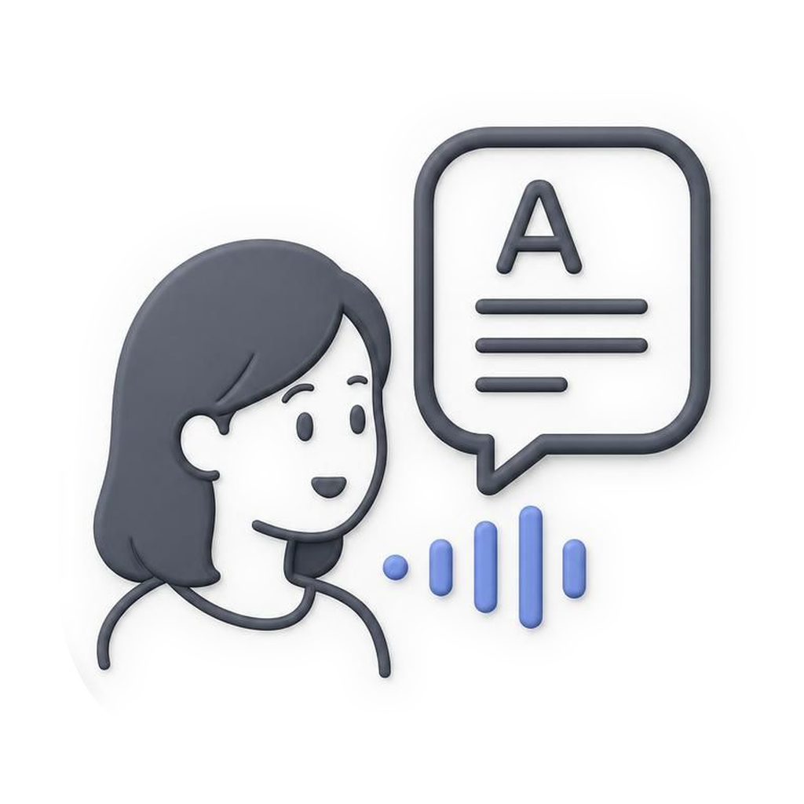
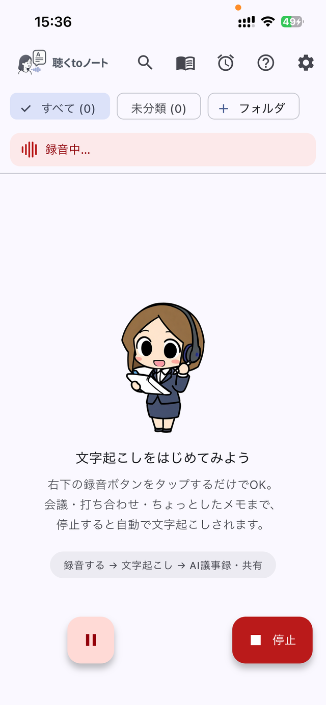
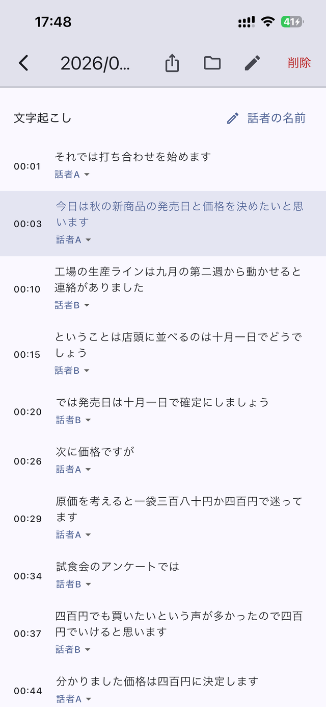
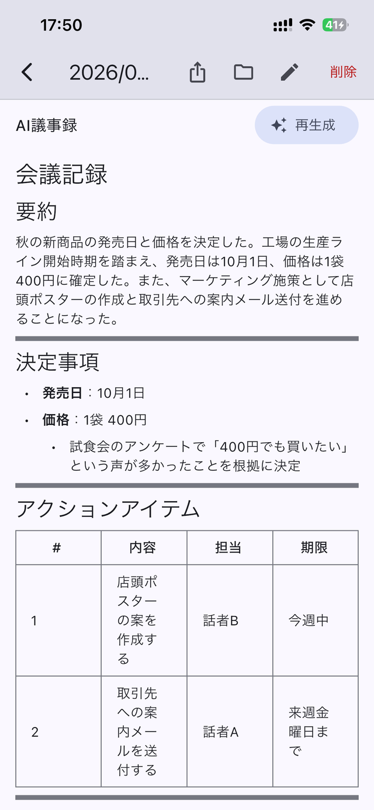

会議も打ち合わせも、ボタンひとつで録音。文字起こしはぜんぶ iPhone の中で完結するから、大事な話も安心です。話者分離つきの文字起こしから、AIがきれいな議事録に仕上げます。
いまは全機能を無料開放中 App Store で近日公開予定（正式版では一部機能が有料プランになる予定です）
録音する → 文字起こし → AI議事録・共有。この一本道です
画面ロック中も、ほかのアプリを見ていても録音は続きます。着信で中断しても、通話が終われば自動で続きから再開します。
日本語に強い音声認識モデルを搭載。圏外でも機内モードでも使えます。だれが話したかを見分ける話者分離にも対応。
要約・決定事項・やることまで自動で整理。会議・講義・インタビューなど、用途に合わせたテンプレートを選べます。
人名・社名・専門用語を登録すると、その言葉で正しく書かれるように。AIがお仕事に合わせた用語集をまとめて作ることもできます。
テキスト・PDF・音声ファイルで書き出し。声を変えて共有できる「声の匿名化」も。
AI議事録はお手持ちのAPIキー（Gemini / Claude / ChatGPT）で動くBYOK方式。Geminiのキーは無料で取得できます。
🔒 音声は、iPhoneの外に出ません
文字起こしはすべて端末の中で行われ、録音データがクラウドへアップロードされることはありません。当社はサーバーを持たず、アナリティクスも広告SDKも使っていません。社外秘の会議も、デリケートな相談も、安心して記録できます。
やわらかくて、迷わない画面を心がけました


「録音したつもりが、切れてた…」そんな悲しい事故を防ぐ工夫を、アプリのすみずみに入れました。使い方に迷ったら、アプリ内の「よくある質問」をのぞいてみてください。